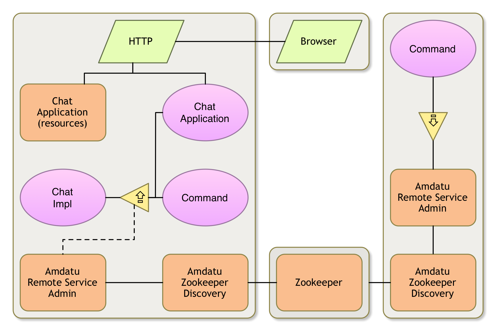
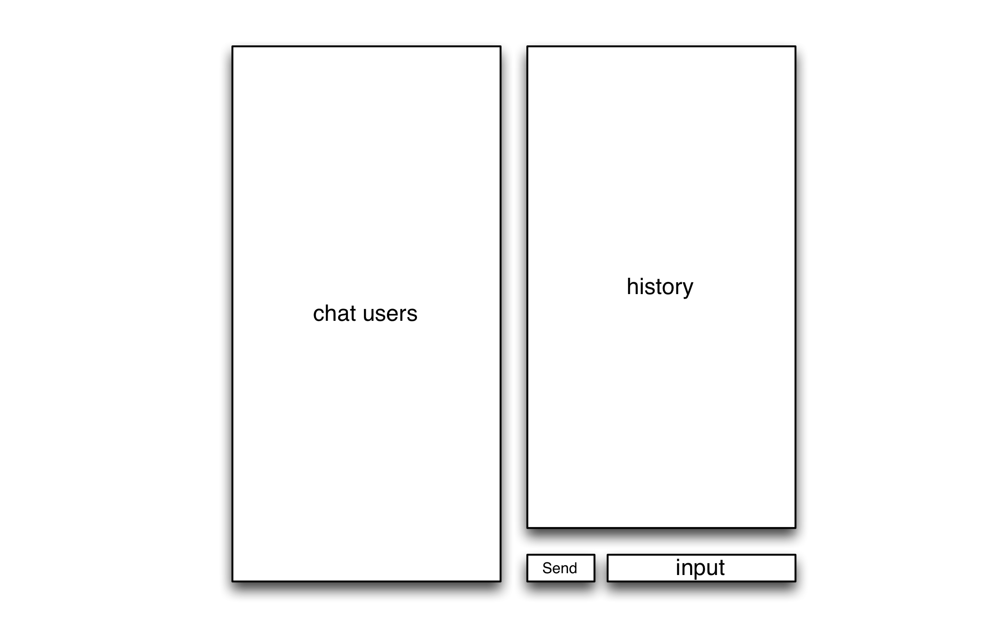
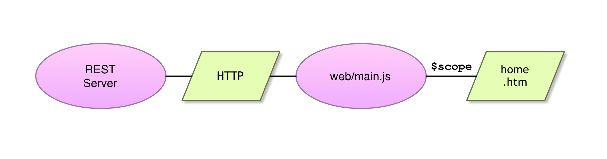
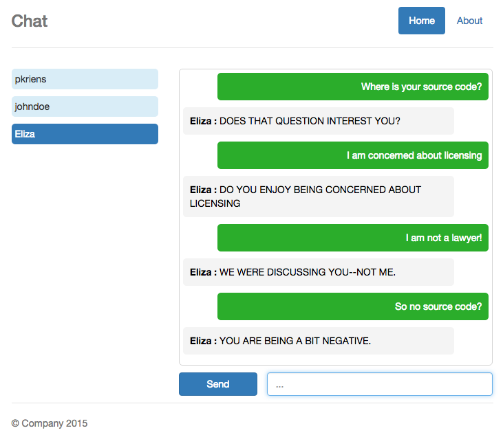

A Chat Web App

We now have a chat client with a Gogo shell command. This works for testing but is not competition to Skype. So can we add a GUI to this model? With OSGi enRoute: Yes, we can! When we created the osgi.enroute.examples.chat.application we already created an unrelated GUI on http://localhost:8080. Let’s see how we can make this into a chat client.
GUI
Fortunately, we decided to keep the problem simple. Each framework represents a single user. We’ll keep the same simplification for the GUI. We’re not logging in, we’re assuming that the framework is one user.
This makes the GUI simple. We need the following parts in our GUI:
- A list of users
- Chat history
- Input message
- Send button

Scope
This tutorial is not about learning Angular, HTML, CSS, Javascript and the other languages popular on the web. The goal is to quickly create a simple GUI on our Chat service model. We will provide some high level information but then provide the different files that need to be modified in your application project. We won’t go into detail how they work.
Angular
As said, it is not the intention of this tutorial to explain Angular in detail. The template used to setup the OSGi enRoute applications provides a minimal example. This example is structured as follows:
- A REST server for
GET /rest/upper/<word> - The
static/<app name>/index.htmlcontains the ‘outer’ page of the application with the menu, alerts, header and footer. One element in this page is filled in by the app, this is the element with theng-viewattribute. - A
web/main.jsfile. This file contains the Javascript code. It is an Angular module and defines the dependencies. In the template it sets up a routing table. Routes are matched against the part after the#/in the application’s URL. The template has a Home page and an About page. A page gets a controller during configuration. A controller is a Javascript function that gets called when the route is activated. A parameter in the invocation is the$scope, any value that is set in the$scopeobject is visible in the GUI. Any changes in this variable will be reflected on the GUI expediently. Really, you do not have to update the GUI, it does it itself. The controller will therefore communicate with the back end to get the data and update the$scopeobject with that data. - The
static/<app name>/main/htm/home.htmandstatic/<app name>/main/htm/about.htmcontain the HTML for the Home and About page respectively. In these pages we can refer to the variables in the$scopeusing the{{and}}syntax.
Schematically, the architecture from a 30.000 feet overview looks like:

For example, the code in the REST server can look like:
AtomicInteger n = new AtomicInteger(1000);
public String getFoo() {
return "FOO " + n.getAndIncrement();
}
The code in the web/main.js would contain the controller. If the controller gets called then we fetch the data from the server. Since Javascript is single threaded, we use a promise to get the result in a callback. In this callback we then update the $scope.
var MODULE = angular.module('<app name>',
[ 'ngRoute']);
MODULE.config( function($routeProvider) {
$routeProvider.when('/', {
controller: mainProvider,
templateUrl: '/<app name>/main/htm/home.htm'
});
$routeProvider.otherwise('/');
});
var mainProvider = function($scope, $http) {
var promise = $http.get('/rest/foo');
promise.then(
function(d) { $scope.foo = d; }
);
}
All that is now left is to show the result in the HTML, e.g. static/<app name>/main/htm/home.htm.
The template is a bit more complicated to support calling the REST server with a parameter, but the idea is the same.
The hardest part of Angular is to learn to live with what feels like a lack of control. We’re very much used to ‘if this happens then do that’. In Angular, the basic idea is to always keep the $scope up to date and the GUI will take care of itself. In the GUI, you enable and disable <div> elements based on the state of the $scope, rarely on events. Buttons update data or initiate a HTTP request that gets set later, but you almost never update the GUI directly.
And one more thing. It does feel a bit like magic how the data updates are instantaneously reflected in the GUI.
The Chat Application (Java)
Since we will use the Chat API in the application, we need to add the API project to our -buildpath.
The ChatApplication class is a REST server. We need the following URLs:
GET /rest/users– Provide a list of usersPUT /rest/message– Send a message
For these functions we need to maintain a map of Chat services indexed by name. Since this list can dynamically change, we need to be able to notify the browser when the list changes, we’ll achieve this with Event Admin service. The code for the ChatApplication class then looks like:
package osgi.enroute.examples.chat.application;
import java.util.Collection;
import java.util.Collections;
import java.util.Map;
import java.util.concurrent.ConcurrentHashMap;
import org.osgi.service.component.annotations.Activate;
import org.osgi.service.component.annotations.Component;
import org.osgi.service.component.annotations.Reference;
import org.osgi.service.component.annotations.ReferenceCardinality;
import org.osgi.service.component.annotations.ReferencePolicy;
import org.osgi.service.event.Event;
import org.osgi.service.event.EventAdmin;
import osgi.enroute.configurer.api.RequireConfigurerExtender;
import osgi.enroute.eventadminserversentevents.capabilities.RequireEventAdminServerSentEventsWebResource;
import osgi.enroute.examples.chat.api.Chat;
import osgi.enroute.examples.chat.api.Message;
import osgi.enroute.google.angular.capabilities.RequireAngularWebResource;
import osgi.enroute.rest.api.REST;
import osgi.enroute.twitter.bootstrap.capabilities.RequireBootstrapWebResource;
import osgi.enroute.webserver.capabilities.RequireWebServerExtender;
@RequireAngularWebResource(resource={"angular.js","angular-resource.js", "angular-route.js"}, priority=1000)
@RequireBootstrapWebResource(resource="css/bootstrap.css")
@RequireWebServerExtender
@RequireConfigurerExtender
@RequireEventAdminServerSentEventsWebResource
@Component(
// CHANGE
name="osgi.enroute.examples.chat.provider"
)
public class ChatApplication implements REST {
// CHANGE
public static String MESSAGE_TOPIC = "osgi/enroute/examples/chat/message";
// CHANGE
public static String USERS_TOPIC = "osgi/enroute/examples/chat/users";
@Reference
EventAdmin eventAdmin;
private String localUser;
private void usersChanged(String userName) {
Event event = new Event(USERS_TOPIC, Collections.singletonMap(Chat.USER_NAME, userName));
eventAdmin.postEvent(event);
}
private final ConcurrentHashMap<String, Chat> users = new ConcurrentHashMap<>();
@Reference(cardinality = ReferenceCardinality.MULTIPLE, policy = ReferencePolicy.DYNAMIC)
void addChat(Chat chat, Map<String, Object> map) {
String userName = (String) map.get(Chat.USER_NAME);
if (users.put(userName, chat) == null) {
if ( isLocal(map))
localUser = userName;
usersChanged(userName);
}
}
void removeChat(Chat chat, Map<String, Object> map) {
String userName = (String) map.get(Chat.USER_NAME);
Chat remove = users.remove(userName);
if (remove != null)
usersChanged(userName);
}
private boolean isLocal(Map<String,Object> map) {
return map.containsKey("service.exported.interfaces");
}
public Collection<String> getUsers() {
return users.keySet();
}
public boolean putMessage( Message message ) throws Exception {
Chat c = users.get(message.to);
if ( c == null)
return false;
message.from = localUser;
return c.send(message);
}
}
Don’t forget to change the component name and the used topic to your own namespace.
Changing this class adds additional requirements. You have to Resolve the debug.bndrun file and debug-alt.bndrun file and save them. If you run into problems, then restart these bndrun files.
Using Event Admin in the Chat Implementation
Currently we’re just outputting the messages to the console. To make the GUI update automatically, we need to send out events via Event Admin. So chaneg the ChatImpl class in the osgi.enroute.examples.chat.provider project to:
package osgi.enroute.examples.chat.adapter;
import java.util.Map;
import org.osgi.service.component.annotations.Component;
import org.osgi.service.component.annotations.Reference;
import org.osgi.service.event.Event;
import org.osgi.service.event.EventAdmin;
import org.osgi.service.metatype.annotations.Designate;
import org.osgi.service.metatype.annotations.ObjectClassDefinition;
import osgi.enroute.dto.api.DTOs;
import osgi.enroute.examples.chat.api.Chat;
import osgi.enroute.examples.chat.api.Message;
@Designate(ocd=Configuration.class, factory=false)
@Component(
name = "osgi.enroute.examples.chat", // CHANGE
property = {
"user.name=osgi",
"service.exported.interfaces=*"
}
)
public class ChatImpl implements Chat {
@Reference
EventAdmin eventAdmin;
@Reference
DTOs dtos;
@Override
public boolean send(Message message) throws Exception {
System.out.printf("%s: %s%n", message.from, message.text);
Map<String,Object> map = dtos.asMap(message);
// CHANGE
Event event = new Event("osgi/enroute/examples/chat/message", map);
eventAdmin.postEvent(event);
return true;
}
}
Don’t forget to change the component name and the used topic to your own namespace.
The Main Front End (Javascript)
The web/main.js file is our ‘main’ Javascript file. It is loaded automatically in our index.html file. It contains an Angular module that is configured and initialized. We configure a routing table to the ‘home’ page and define a controller. The home page’s html is defined in static/osgi.enroute.examples.chat/main/htm/home.htm.
The controller initializes a chat object with a users list, a selected user, and a history. It then fetches the list of users every time an event is received signalling the list has changed. We also provide a send(string) function to send a message to the host via the PUT /rest/message URI.
'use strict';
(function() {
var MODULE = angular.module(
'osgi.enroute.examples.chat', // CHANGE
[ 'ngRoute', 'enEasse' ]);
MODULE.config( function($routeProvider) {
$routeProvider.when('/', {
controller: mainProvider,
// CHANGE
templateUrl: '/osgi.enroute.examples.chat/main/htm/home.htm'}
);
$routeProvider.when('/about', {
// CHANGE
templateUrl: '/osgi.enroute.examples.chat/main/htm/about.htm'}
);
$routeProvider.otherwise('/');
});
var alerts = [];
var chat = {
users: [],
history: [],
user: undefined
};
function error( msg ) {
alerts.push( { type: 'danger', msg: msg });
}
function webError( d ) {
error( d.statusText);
}
MODULE.run( function($rootScope, $location) {
$rootScope.alerts = alerts;
$rootScope.closeAlert = function(index) {
$rootScope.alerts.splice(index, 1);
};
$rootScope.page = function() {
return $location.path();
}
});
var mainProvider = function($scope, $http, en$easse) {
$scope.chat = chat;
function refreshUsers() {
var promise = $http.get('/rest/users');
promise.then(
function(d) {
angular.copy(d.data, chat.users)
},
webError
);
}
refreshUsers();
var close = en$easse.handle("osgi/enroute/examples/chat/*", function(e) {
$scope.$applyAsync(function() {
if ( e['event.topics'] == 'osgi/enroute/examples/chat/message')
chat.history.push({ from: e.from, text: e.text });
else
refreshUsers();
});
}, function(d) { } );
$scope.$on('$destroy', function() { close.close(); })
$scope.send = function(text) {
var promise = $http.put('/rest/message', { to: chat.user, text: text});
promise.then(
function(d) {
chat.history.push({ from: null, text: text })
$scope.text = "";
},
webError
);
}
}
})();
Don’t forget to change the names to your own namespace. Important!
The Display (HTML)
We’re almost there. We now must replace the static/osgi.enroute.examples.chat/main/htm/home.htm file with the HTML definition of our user interface:
<section ng-cloak class="row">
<div class="col-md-4 chat-user">
<p
ng-repeat ="u in chat.users"
ng-click =chat.user=u
class =entry
ng-class ="{selected: u==chat.user}"
>
</p>
</div>
<div class=col-md-8>
<form class="form-inline">
<div
class=chat-history>
<div
ng-repeat ="m in chat.history"
class="message"
ng-class ="{'ours': !m.from}">
<b
ng-show =m.from>
:
</b>
</div>
</div>
<div class="form-group chat-input">
<button
class ="btn btn-primary"
ng-click =send(text)
ng-disabled =!chat.user>
Send
</button>
<input
type ="text"
class ="form-control"
placeholder ="..."
ng-model =text>
</div>
</form>
</div>
</section>
The Styling (CSS)
Though Bootstrap makes it hard, we tried to keep the HTML free from low level formatting decisions. However, to make the UI look not too unfriendly, we need to provide some CSS. This CSS is web/style.css. This file already contains styling for the index.html page, so you should add the following text at the start or end:
.chat-user .entry { padding: 5px;
border-radius: 5px;
background-color: #d9edf7; }
.chat-user .entry.selected { background-color: #337ab7;
color: white; }
.chat-history { min-height: 400px;
border-radius: 5px;
border: 1px solid lightgrey;
margin-bottom: 10px;
padding: 5px; }
.chat-input { width: 100%;
margin-bottom: 10px; }
.chat-input button { width: 25%; }
.chat-input input { min-width: 72%;
float: right; }
.chat-history .message { background-color: #F4F4F4;
color: black;
border-radius: 5px;
text-align: left;
margin-left: 0px;
margin-right: 50px;
margin-bottom: 10px;
padding: 10px; }
.chat-history .message.ours { color: white;
background-color: #2BAD2B;
text-align: right;
margin-left: 50px;
margin-right: 0px; }
section { margin-bottom: 10px; }
Running
Before your run verify closely that you have replaced all the strings that start with org.osgi.examples.chat. If you have replaced them inconsistently then you’re in for a nice debugging session.
In principle, you should still be running your cluster (Zookeeper, your client, alternative clients). If you’re not sure about the state, then terminate all running frameworks and Zookeeper. The look at the Cluster setup how to run the cluster.
After you made these changes you can then goto http://localhost:8080. This home page contains a link to your application.
If it all works, you should get a window like this:
